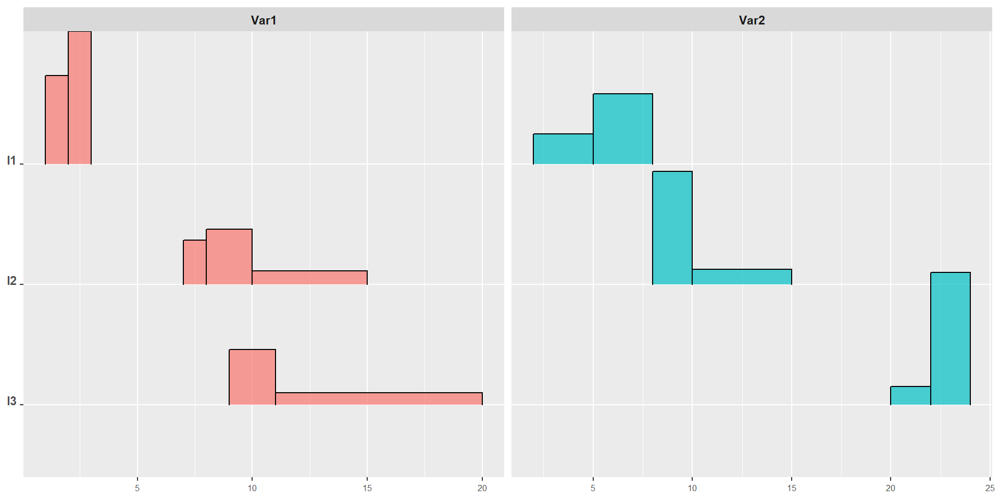

p1<-plot(mydist, type="HISTO", col="red",border="blue")#plots a density approximation for mydistp2<-plot(mydist, type="DENS", col="red", border="blue") #plots a horizontal boxplot for mydistp3<-plot(mydist, type="HBOXPLOT") #plots a vertical boxplot for mydistp4<-plot(mydist, type="VBOXPLOT") #plots the cumulative distr. func. of mydistp5<-plot(mydist, type="CDF") #plots the quantile function of mydistp6<-plot(mydist, type="QF")
Obtainning the histogram and the CDF of a distributionH object
mydist.histo<-get.histo(mydist) #this returns the histogrammydist.cdf<-get.distr(mydist) #this returns the CDF#into data.frame objectsmydist.histo
min.x max.x p
1 7 8 0.2
2 8 10 0.5
3 10 15 0.3
mydist.cdf
x p
1 7 0.0
2 8 0.2
3 10 0.7
4 15 1.0
Obtaining a single quantile or a probability from a distributionH object
# computes the CDF value for x=9.5compP(object = mydist,q =9.5)
[1] 0.575
# computes the quantile for p=0.1compQ(object = mydist,p =0.1)
[1] 7.5
Other basic statistics for distributionH objects
mydist.mean=meanH(mydist) #computes the meanmydist.std=stdH(mydist) #computes the standard deviationmydist.skew=skewH(mydist) #computes the 3rd stand. centr. momentmydist.kurt=kurtH(mydist) #computes the 4th stand. centr. moment
Being \(Q(p)\) a quantile function the four measures are, respectively, the histogram version of the following formulas (Gilchrist 2000): \[\boxed{\color{orange}{\mu=\int\limits_0^1Q(p)dp}},\;\;\boxed{\color{lime}{\sigma=\sqrt{\int\limits_0^1Q(p)^2dp-\mu^2}}},\]
We can consider the histogram as a weighted mixture of \(b\) (the number of classes or bins of a histogram) disjointed uniform pdfs. Thus, if we consider the trivial histogram as the histogram with one bin (namely, a uniform distribution), and that it is defined as \(X\sim U(a,b)\) having qf\(Q(p)=a+p\cdot(b-a)\) we have: \[\boxed{\color{orange}{\mu=\int\limits_0^1Q(p)dp=\int\limits_0^1[a+p\cdot(b-a)]dp=\frac{a+b}{2}}}\] or if we consider the center (midpoint) \(c=\frac{a+b}{2}\) and the radius (half-width) \(r=\frac{b-a}{2}\), the \(Q(p)=c-r + 2pr=c+r(2p-1)\) we have \[\boxed{\color{orange}{\mu=\int\limits_0^1Q(p)dp=\int\limits_0^1[c+r(2p-1)]dp=c}}\]
The histogram trick: the mean (2)
If we consider the histogram with \(k\) bins a collection of weighted uniform: \[H=\{([a_1,b_1],\pi_1),\ldots,([a_k,b_k],\pi_k)\}.\] Let’s consider \(F_{\ell}=\sum\limits_{s=1}^{\ell}\pi_{s}\) and \(F_0=0\), then the \(Q(p)\) is a piece wise linear function then: \[\boxed{\color{orange}{\mu=\int\limits_0^1Q(p)dp=\sum\limits_{\ell=1}^k\int\limits_{F_{\ell-1}}^{F_\ell}Q(p)dp=\sum\limits_{\ell=1}^k\pi_{\ell}\frac{a_{\ell}+b_{\ell}}{2} =\sum\limits_{\ell=1}^k\pi_{\ell}c_{\ell}}} \]
The histogram trick, plus the center-radii transformation: standard deviation (3)
We have the distribution \(H=\{([a_1,b_1],\pi_1),\ldots,([a_k,b_k],\pi_k)\}\). Each bin can be described in terms of center and radii: \(c_{\ell}=\frac{a_{\ell}+b_{\ell}}{2}\) and \(r_{\ell}=\frac{b_{\ell}-a_{\ell}}{2}\). The standard deviation of a histogram is computed as follows: \[\boxed{\color{lime}{\sigma=\sqrt{\int\limits_0^1Q(p)^2dp-\mu^2}=\sqrt{\sum\limits_{\ell=1}^k\int\limits_{F_{\ell-1}}^{F_\ell}Q(p)^2dp-\mu^2}=
\sqrt{\sum\limits_{\ell=1}^k\pi_{\ell}\left[c_{\ell}^2+\frac{1}{3}r_{\ell}^2\right] -\mu^2}}}
\]
The histogram trick, the center-radii transformation and standardization: skweness and the kurtosis (4)
The skewness and the kurtosis indices are computed as the third and the fourth standardized moments of the histogram. Using a centered histogram (i.e. a histogram shifted to their mean value), the corresponding centered quantile function\(Q^c(p)=Q(p)-\mu\) and some well-known simplifications, it is possible to prove that we can compute exactly the indices into a finite number of operations (avoiding the numerical problems related to the numeric computation of the integrals). Let’s consider \(_sc_{\ell}=\frac{c_{\ell}-\mu}{\sigma}\) and \(_sr_{\ell}=\frac{r_{\ell}}{\sigma}\), the standardized midpoints and the normalized radii of the bins, the two shape indices are computed (exactly) as follows: \[\boxed{\color{yellow}{sk=\frac{\int\limits_0^1\left[Q^c(p)\right]^3dp}{\sigma^3}=\sum\limits_{\ell=1}^k\pi_{\ell}\cdot {_sc}_{\ell}\cdot \left[ \,_sc_{\ell}^2+\,_sr_{\ell}^2\right]}},\;\;\boxed{\color{pink}{ ku=\frac{\int\limits_0^1\left[Q^c(p)\right]^4dp}{\sigma^4}=\sum\limits_{\ell=1}^k\frac{\pi_{\ell}}{5}\left[5{_sc}_{\ell}^4+10{_sc}^2_{\ell}{_sr}^2_{\ell}+{_sr}^4_{\ell}\right]}}\]
How to obtain midponts and radii (1)
get.histo(mydist)## min.x max.x p## 1 7 8 0.2## 2 8 10 0.5## 3 10 15 0.3crwtransform(mydist) #return a list with three slots## $Centers## [1] 7.5 9.0 12.5## ## $Radii## [1] 0.5 1.0 2.5## ## $Weights## [1] 0.2 0.5 0.3
\(L_2\) Wasserstein distance between distributionH objects
Given two distributions having \(f\) and \(g\) as pdfs and, respectively, \(Q_f(p)\) and \(Q_g(p)\) as quantile functions, the (squared) \(L_2\) Wasserstein distance is: \[\boxed{\color{orange}{d_W^2(f,g)=\int\limits_0^1\left[Q_f(p)-Q_g(p)\right]^2dp}}\](A. Irpino and Romano 2007) and (R. Irpino A.and Verde 2015) showed that \[\boxed{\color{yellow}{d_W^2(f,g)=\left(\mu_f-\mu_g\right)^2+\left(\sigma_f-\sigma_g\right)^2+2\sigma_f\sigma_g\left[1-\rho_{QQ}(f,g)\right]}}\] where \(\rho_{QQ}(f,g)\) is the Pearson correlation between two qfs: \[\rho_{QQ}(f,s)=\frac{\int\limits_0^1Q_f(p)Q_g(p)dp-\mu_f\mu_g}{\sigma_f\sigma_g} \]
Computing the dot product between two quantile functions of histograms
If two histograms \(H_1\) and \(H_2\) have a same number of bins, say \(k\), and such bins contain respectively the same mass, namely, \(\pi_{\ell,1}=\pi_{\ell,2}\)\(\forall \ell \in k\) the dot product can be computed using the histogram trick as follows: \[\int\limits_0^1Q_f(p)Q_g(p)dp=\sum\limits_{\ell=1}^k\left( c_{\ell,1}c_{\ell,2}+\frac{1}{3}r_{\ell,1}r_{\ell,2}\right)\]
How to recode two hstograms such that thay have the same number of bins and the same masses?
registered=register(dist1, dist2) #returns a list with 2 registered distributionH objects
The register method in action
dist1=distributionH(c(1,2,3),c(0, 0.4, 1)) dist2=distributionH(c(7,8,10,15),c(0, 0.2, 0.7, 1)) registered=register(dist1,dist2) ## register the two distributions
Returning on \(L_2\) Wasserstein distance
Using register method, the (Squared) \(L_2\) Wasserstein distance between two histograms exactly:
The method rQQ computes the Pearson correlation index of two quantile functions. It is equal to \(1\) when the distributions have the same shape (except for the means and the standard deviations).
Operations between distributionH objects
Sum (Between two qfs, or a qf and a number)
Multiplication (Between a qf and a positive number)
Difference (When admissible, namely the result is a qf, between two qfs, or a qf and a number)
From raw data to distributionH objects
data2hist, a function for converting raw data to histogram-valued one.
(optional) a string. Default is "histogram", i.e. the function “histogram” defined in the histogram package. If "base" the hist function is used. "FixedQuantiles" computes the histogram using as breaks a fixed number of quantiles. "ManualBreaks" computes a histogram where breaks are provided as a vector of values. "PolyLine" computes a histogram using a piecewise linear approximation of the empirical cumulative distribution function using the “Ramer-Douglas-Peucker algorithm”, https://en.wikipedia.org/wiki/Ramer-Douglas-Peucker_algorithm. An epsilon parameter is required. The data are scaled in order to have a standard deviation equal to one.
type
(optional) a string. Default is combined and generates a histogram having regularly spaced breaks (i.e., equi-width bins) and irregularly spaced ones. The choice is done accordingly with the penalization method described in histogram. “regular” returns equi-width binned histograms, “irregular” returns a histogram without equi-width histograms.
qua
a positive integer to provide if algo="FixedQuantiles" is chosen. Default=10.
breaks
a vector of values to provide if algo="ManualBreaks" is chosen.
epsilon
a number between 0 and 1 to provide if algo="PolyLine" is chosen. Default=0.01.
Output : A distributionH object, i.e. a distribution.
The MatHclass: a histogram-valued data table
A data table of HD: the MatH object
A MatH object is a table (a matrix): each row is an individual each column is a histogram variable.
rownames is a vector of strings with the labels of the individuals
varnames is a vector of strings with the labels of variables
by.row indicates if the matrix must be filled by row (TRUE) or by column (FALSE this is the default)
An example of creation of a new MatH object
##---- create a list of six distributionH objectsListOfDist<-vector("list",6)ListOfDist[[1]]<-distributionH(c(1,2,3),c(0, 0.4, 1))ListOfDist[[2]]<-distributionH(c(7,8,10,15),c(0, 0.2, 0.7, 1))ListOfDist[[3]]<-distributionH(c(9,11,20),c(0, 0.5, 1))ListOfDist[[4]]<-distributionH(c(2,5,8),c(0, 0.3, 1))ListOfDist[[5]]<-distributionH(c(8,10,15),c(0, 0.75, 1))ListOfDist[[6]]<-distributionH(c(20,22,24),c(0, 0.12, 1))## create a MatH object filling it by columnsMyMAT=MatH(x=ListOfDist,nrows=3,ncols=2,rownames=c("I1","I2","I3"), varnames=c("Var1","Var2"),by.row=FALSE)#bulding an empty 10 by 4 matrix of histogramsempty.MAT=MatH(nrows=10,ncols=4)
show method
show(MyMAT) #or simply type MyMAT
a matrix of distributions
2 variables 3 rows
each distibution in the cell is represented by the mean and the standard deviation
Var1 Var2
I1 [m= 2.1 ,s= 0.56862 ] [m= 5.6 ,s= 1.6248 ]
I2 [m= 9.75 ,s= 2.0907 ] [m= 9.875 ,s= 1.7515 ]
I3 [m= 12.75 ,s= 3.3323 ] [m= 22.76 ,s= 0.86933 ]
plot method
plot(MyMAT)

More on ploting a MatH (1/3): basic plot
plot(BLOOD, type="HISTO", border="blue") #plots a matrix of histograms
More on ploting a MatH (2/3): density plot
plot(BLOOD, type="DENS", border="blue") #plots a matrix of densities
More on ploting a MatH (3/3): boxplots
plot(BLOOD, type="BOXPLOT") #plots a boxplots
Main methods for the MatH class
For accessing to some basic information
get.MatH.ncols returns the number of columns
get.MatH.nrows returns the number of rows
get.MatH.rownames returns the list of the row-labels
get.MatH.varnames return the list of labels of thevariables (the columns)
get.MatH.stats return a matrix of a basic statistic computed for each cell of the matrix (some examples follow).
An example of get.MatH.stats method
The get.MatH.stats returns a list containing the name of the basic statistics computed and a $mat containing a matrix of numbers with the same size of the MatH object
get.MatH.stats(BLOOD) # the means of the distributions in BLOOD dataset get.MatH.stats(BLOOD,stat='median') # the medians of the distributionsget.MatH.stats(BLOOD,stat='quantile', prob=0.5) #the same as medianget.MatH.stats(BLOOD,stat='min') # minima of the distributions get.MatH.stats(BLOOD,stat='quantile', prob=0) #the same as minget.MatH.stats(BLOOD,stat='max') # maxima of the distributions get.MatH.stats(BLOOD,stat='quantile', prob=1) #the same as maxget.MatH.stats(BLOOD,stat='std') # standard deviations get.MatH.stats(BLOOD,stat='skewness') #skewness indicesget.MatH.stats(BLOOD,stat='kurtosis') #kurtosis indicesget.MatH.stats(BLOOD,stat='quantile',prob=0.05)
Functions useful for manipulating
Useful for the histogram trick
registerMH(MyMat), returns a new MatH object with all the distributions transformed. All the distributions have the same number of bins each one containing the same mass (It is useful for computing exactly the basic statistics based on \(L_2\) Wasserstein metric)
Fuctions for subsetting of for binding MatH objects
WH.bind(MAT1, MAT2, byrow=TRUE) attaches MAT2 on the right of MAT1. The two MatH objects must have the same number of rows;
WH.bind(MAT1, MAT2, byrow=FALSE) attaches MAT2 under MAT1. The two MatH objects must have the same number of columns;
[,] an overloaded method for sub-setting a matrix. It returns a new MatH object.
Subsetting example
BLOOD[10:14,1:2] ## a matrix of distributions ## 2 variables 5 rows ## each distibution in the cell is represented by the mean and the standard deviation ## Cholesterol Hemoglobin ## u10: M-40 [m= 170.06 ,s= 20.011 ] [m= 12.092 ,s= 0.52656 ]## u11: M-50 [m= 194.22 ,s= 30.165 ] [m= 12.214 ,s= 0.59708 ]## u12: M-60 [m= 203.36 ,s= 26.223 ] [m= 12.245 ,s= 0.50862 ]## u13: M-70 [m= 205.66 ,s= 22.499 ] [m= 12.15 ,s= 0.33425 ] ## u14: M-80+ [m= 205.48 ,s= 23.537 ] [m= 12.12 ,s= 0.6163 ]BLOOD[2,3] #ATTENTION: returns a 1x1 MatH, and not a distributionH## a matrix of distributions ## 1 variables 1 rows ## each distibution in the cell is represented by the mean and the standard deviation ## Hematocrit ## u2: F-30 [m= 36.497 ,s= 2.1225 ]
Extracting a distributionH from a MatH: how to do it?
Methods based on \(L_2\) Wasserstein norm for summing and multiplying matrices
WH.mat.sum performs a classic cell by cell sum. In particular, the result is a new MatH object having in each cell a distribution associated with the quantile function resulting from the sum of the corresponding quantile functions (It is a sum consistent with the Wasserstein metric). As usual, the matrix must have the same dimensions.
MAT.sum=WH.mat.sum(MyMAT1,MyMAT2)
WH.mat.prod performs the matrix multiplication of two MatH objects. It returns a matrix of numbers according to the dot product defined for two distributions and associated with the \(L_2\) Wasserstein metric. It is possible also to consider trasposition of matrices.
Methods for univariate and bivariate statistics of histogram variables: the mean distribution
WH.vec.mean computes a distributionH that is the mean distribution of a vector or a matrix of distributions (a MatH object). The mean distribution is computed accordingly to the sum based on the \(L_2\) Wasserstein distance, namely, it is the distribution associated with the average quantile function of the quantile functions of the vector of distributions. It is possible also to assign weights to the elements of vetor in order to obtain a weighted mean.
WH.vec.sum same as WH.vec.mean, but computes only the sum.
WH.vec.mean(BLOOD[,1]) #returns the average distribution of # the first variableWH.vec.mean(BLOOD[,1], w =runif(get.MatH.nrows(MyMAT)))# returns a random weighted average
A graphic example of WH.vec.mean
Methods for univariate and bivariate statistics of histogram variables: the variability and the association indexes
These methods returns a matrix of numbers accordingly to the number of the compared variables. The formulas are those presented in (R. Irpino A.and Verde 2015).
Sum of squares
WH.SSQ(MyMAT, w=w) computes the wheighted Sum of Squares and the Sum of products of the deviations from the means of a MatH object. The weights are associated to the rows, if missing, the weights are considered equal. The result is square matrix of dimension equal to the number of variables of the MatH object.
WH.SSQ2(MyMAT1, MyMAT2, w=w) computes the wheighted Sum of products of the deviations from the means of two MatH objects. The two matrices must have the same number of rows. The result is rectangular matrix with rows equal to the number of variables of the first MatH object and columns the number of variables of the first MatH object.
Using these it is possible to compute covariances and correlations.
Covariance and correlation indexes
Variance, covariance and correlation
WH.var.covar(MyMAT, w=w) computes the variance-covariance matrix of a MatH object.
WH.var.covar2(MyMAT1, MyMAT2, w=w) computes a covariance matrix between two MatH objects.
WH.correlation(MyMAT, w=w) computes the correlation matrix of a MatH object.
WH.correlation2(MyMAT1, MyMAT2, w=w) computes the correlation matrix of two MatH objects.
Examples of how to compute basic statistics of variability for a single variable
# the variance of a histogram variableVAR.Choresterol=WH.var.covar(BLOOD[,1])as.numeric(VAR.Choresterol)## [1] 388.1376# the standard deviationSTD.Choresterol=sqrt(VAR.Choresterol)as.numeric(STD.Choresterol)## [1] 19.70121
The TdistributionH class: a class for a histogram-valued data observed along time
TdistributionH class (Not completely developed!!)
It is essentially a specilized class of distributionH equipped with a time-related information. Being a distribution, we considered to specialize the class such that it can contains
a tstamp, a numeric value that represents a time stamp, or;
a period, a list containing two slots start and end, two numbers (for now, a time/date dormat will be chosen in the future), indicating the initial and the final period of observation. Indeed, we imagine that a histogram (or a distribution) is the set of values observed during a time period.
The list of TdistributionH objects are organized into a vector of dimension equal to epoc. The slot containing the vector is called data. If we need to see what is in the HTS we need to call elements from @data slot.
# RetHTS is a HTS of the returns five-minutes returns of DOLL/YEN changes # rates observed along 108 days (it is one of the dataset available in the pkg)RetHTS@data[2]## [[1]]## X p## Bin_1 [ -0.1 ; -0.06 ) 0.03833## Bin_2 [ -0.06 ; -0.03 ) 0.1394## Bin_3 [ -0.03 ; 0.03 ) 0.7038## Bin_4 [ 0.03 ; 0.06 ) 0.09059## Bin_5 [ 0.06 ; 0.12 ] 0.02787## ## mean = -0.00275259208362382 std = 0.0342206481885284 ##
Main methods
subsetHTS(HTS, from, to) extracts a piece (in the time sense) of HTS
show(HTS) returns a list of valuesand basic statistics related to the distributions in the HTS (wee see the results in the next slide)
plot(HTS,...) shows a plot of the HTS, (we see examples in the next slides)
#plots the first 20 elements RetHTS datasetplot(subsetHTS(RetHTS,from=1,to=20))
The plot method (2/4)
# plots the first 60 elements RetHTS dataset divided in # pieces of 30 epocsplot(subsetHTS(RetHTS,from=1,to=60), maxno.perplot=30)
The plot method (3/4)
# plots HTS elements RetHTS dataset divided in # pieces of 36 epocsplot(RetHTS, maxno.perplot=36)
The plot method (4/4): plotting using boxplots
# plots HTS elements RetHTS dataset divided in # pieces of 54 epocsplot(RetHTS, type="BOXPLOT", maxno.perplot=54)
In the next presentations
Implementation of methods for data analysis of histogram-valued data tables
Principal component analysis
of a single Histogram variable
of several histogram variables
Regression
Two components regression analysis
Clustering methods
Dynamic clustering (a generalization of k-means algorithm)
Adaptive distances-based dynamic clustering
Hierarchical clustering
Kohonen Self Organizing Maps
Fuzzy c-means
Adaptive distances-based Fuzzy c-means
References
Gilchrist, W. 2000. Statistical Modelling with Quantile Functions. Abingdon: CRC Press.
Irpino, Antonio, and Elvira Romano. 2007. “Optimal Histogram Representation of Large Data Sets: Fisher Vs Piecewise Linear Approximation.” In EGC, edited by Monique Noirhomme-Fraiture and Gilles Venturini, RNTI-E-9:99–110. Revue Des Nouvelles Technologies de l’information. Cépaduès-Éditions.
Irpino, R., A.and Verde. 2015. “Basic Statistics for Distributional Symbolic Variables: A New Metric-Based Approach.”Advances in Data Analysis and Classification 9 (2): 143–75. https://doi.org/10.1007/s11634-014-0176-4.